Credits
Data sources
Fight histories, records and bio data: Tapology fighter pages. UFC per-fight statistics and career averages: ESPN's public MMA data (UFCStats.com was not reachable from our updater). Event lists: promotion sites, Tapology and Wikipedia. Each fighter profile lists its exact source URLs and a "last updated" date. "—" means no source we checked had the value.
Rankings and champion lists (Rankings): only the official lists published by each promotion (UFC.com, PFLmma.com, onefc.com, kswmma.com, oktagonmma.com, bkfc.com, jp.rizinff.com, cagewarriors.com, lfa.com). Each list on the rankings page links its source and shows its date.
Fighter photos are used only when freely licensed on Wikimedia Commons (CC BY, CC BY-SA, CC0 or public domain) and linked to the fighter's own Wikidata entry. Photos are cropped and resized to small squares. No promotion, broadcaster or stats-site headshots are used. Fighters without a free photo show their initials.
Fighter photos (172)


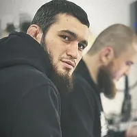
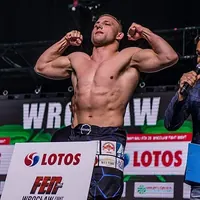
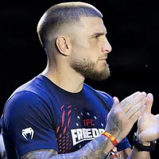
Aleksandre Topuria
Photo: U.S. Army photo by Sgt. 1st Class Brittany Primavera · Public domain · Wikimedia Commons (cropped, resized)
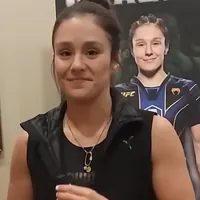


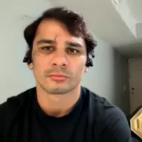
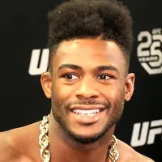
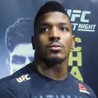
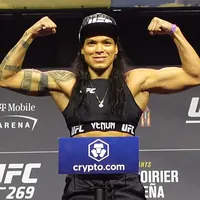
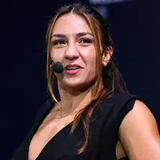
Amanda Ribas
Photo: Web Summit Rio from Rio de Janeiro, Brazil · CC BY 2.0 · Wikimedia Commons (cropped, resized)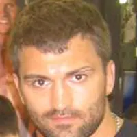

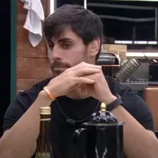
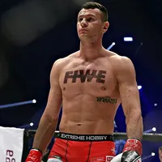
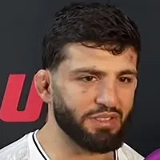
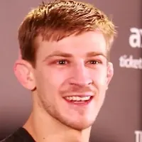
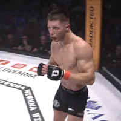
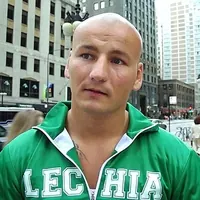
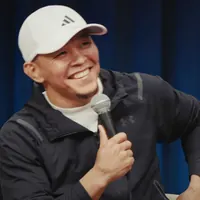
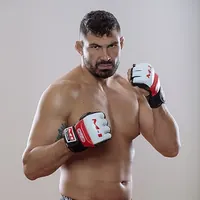
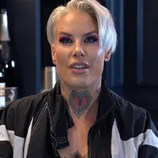
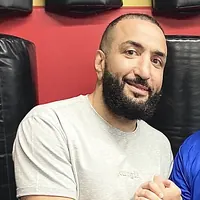
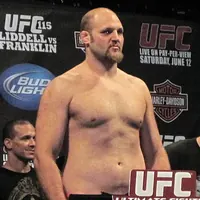
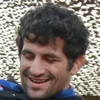
Beneil Dariush
Photo: AL ASAD AIR BASE, IRAQ 12.18.2018 Photo by 1st Lt. Leland White 201st Regional Support Group · CC BY-SA 4.0 · Wikimedia Commons (cropped, resized)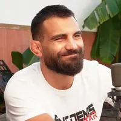
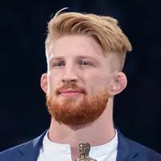

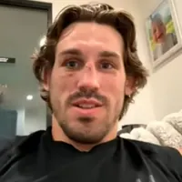
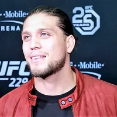
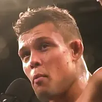
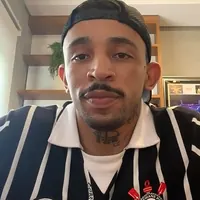


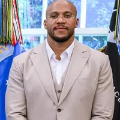
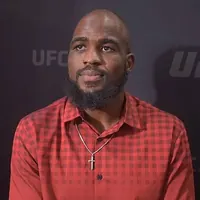
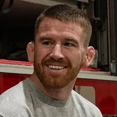
Cory Sandhagen
Photo: Senior Airman Ty Pilgrim · Public domain · Wikimedia Commons (cropped, resized)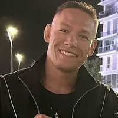
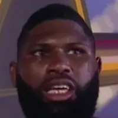
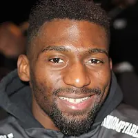
Cédric Doumbé
Photo: Paulblank http://www.postproduktie.nl · CC BY-SA 4.0 · Wikimedia Commons (cropped, resized)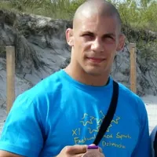
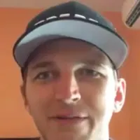
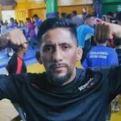
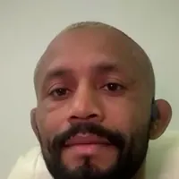
 Derek Brunson
Derek Brunson
Photo: Lance Cpl. Jonathan G. Wright · Public domain · Wikimedia Commons (cropped, resized)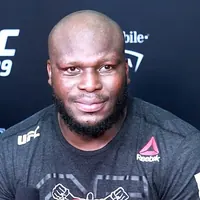


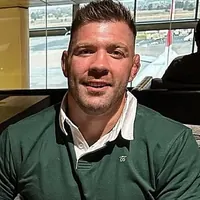
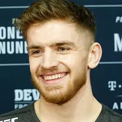
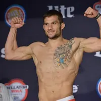
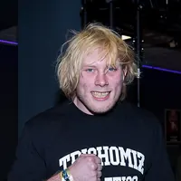
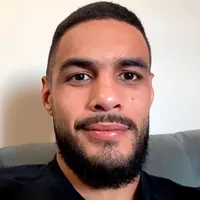
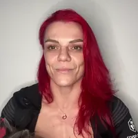
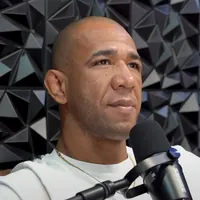
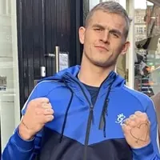
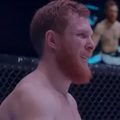
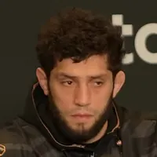
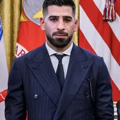
- Jade Masson-Wong
Photo: Unknown authorUnknown author · CC BY-SA 4.0 · Wikimedia Commons (cropped, resized) - Liz Carmouche
Photo: 3d U.S. Infantry Regiment "The Old Guard" · CC0 · Wikimedia Commons (cropped, resized) - Marlon Vera
Photo: Asamblea Nacional del Ecuador · CC BY-SA 2.0 · Wikimedia Commons (cropped, resized) 

- Michael Morales
Photo: Presidencia de la República del Ecuador · Public domain · Wikimedia Commons (cropped, resized)  Movsar Evloev
Movsar Evloev
Photo: Press Service of the Head and Government of the Republic of Ingushetia · CC BY 4.0 · Wikimedia Commons (cropped, resized)- Neil Magny
Photo: 3d U.S. Infantry Regiment "The Old Guard" · Public domain · Wikimedia Commons (cropped, resized) 


- Raquel Pennington
Photo: NATHANIEL GARCIA PHOTOGRAPHY · CC BY-SA 2.0 · Wikimedia Commons (cropped, resized) 
 Shinobu Ota
Shinobu Ota
Photo: Mohammad Hassanzadeh / Tasnimnews · CC BY 4.0 · Wikimedia Commons (cropped, resized)- Yair Rodriguez
Photo: File:Carrera con Yair "Pantera" Rodríguez -i---i- (30657689682).jpg: PLEASE COMPLETE AUTHOR INFORMATION derivative work: Alexander Gustafsson · CC0 · Wikimedia Commons (cropped, resized)


.jpg){kind=link}


.jpg){kind=link}


.jpg){kind=link}
_(cropped).jpg){kind=link}


.JPG){kind=link}


.jpg){kind=link}


.jpg){kind=link}

.jpg){kind=link}


.jpg){kind=link}

_(cropped).jpg){kind=link}


.jpg){kind=link}


.jpg){kind=link}


.jpg){kind=link}
_in_the_video_%27BKFC_Champ_Jessica_Borga_Talks_About_How_the_Fued_with_Fellow_Champ_Christine_Ferea_Started!%27.png){kind=link}


.jpg){kind=link}
.jpg){kind=link}


.png){kind=link}

_(cropped).jpg){kind=link}
.jpg){kind=link}
.jpg){kind=link}


.jpg){kind=link}

.jpg){kind=link}


.png){kind=link}


_(cropped).jpg){kind=link}
.png){kind=link}
.jpg){kind=link}
.jpg){kind=link}


.jpg){kind=link}


.png){kind=link}

.jpg){kind=link}


_(cropped).jpg){kind=link}


.jpg){kind=link}


_(1).jpg){kind=link}

.jpg){kind=link}


.jpg){kind=link}


_cropped.jpg){kind=link}

Last updated 2026-10-26. Spotted a wrong photo or credit? Tell us and we will fix or remove it.